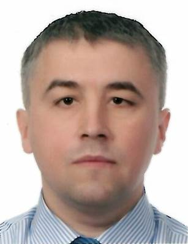

Yevgeniy Gandzyuck
Contact info:
- Phone: +48 694834967
- E-mail: e.barbedwire@gmail.com
- Skype: bwireby
- Telegram: barbedwire_by
Summary:
Senior software developer with more then 19 years experience. Strong in design and integration problems solving skills. Mostly skilled in developing ERP-systems. An enthusiastic creative thinker and functional programming evangelist.
Career highlights:
- Has developed several systems for managing different private businesses from scratch using special ERP-platform and integration tools. About a year ago decided to change working area to be more involved in different functional programming technologies.
- Successful realization of System For Veterinary Clinics management. Full cycle of projecting and building all parts.
- Worked with different development teams on positions of software developer, lead software developer, team leader and lead software architect. Besides engineer and lead activities also worked as Database Administrator, Department Leader and External Interviewer.
- Solid knowledge of functional programming principles.
Skills:
- Programming Languages:
- TypeScript
- JavaScript
- Java
- Haskell
- Scala
- C/C++
- Flow
- PHP
- Frameworks and Libraries:
- Node.js
- Express.js
- Koa
- React
- Nest.js
- Vue
- Databases:
- MS SQL
- MySQL
- Postgres
- MongoDB
- Interbase
- Development Environments (IDE):
- IntelliJ WebStorm
- IntelliJ IDEA
- Eclipse
- MS Visual Studio
- VSCode
- Other automation & build tools:
- Git
- Docker
- Kubernetes
- CircleCI
- Gulp
- Maven
- Stack
- Operation Systems/Platforms:
- MacOS
- Windows
- Linux
- Other skills:
- 1C Enterprise-management platform
Experience (last years):
“Star Global” - Backend Developer (May 2021 — Present)
- StockX. The StockX warehouse engineering team is responsible for developing, maintaining, and monitoring all of the services, systems, and applications used inside every warehouse in the StockX global distribution network. This includes the authentication of items received from sellers, inventory management, processing of buyer orders, and every process/automation in between. As the software engineer on that team, my responsibilities include developing microservices, technical oversight, performance monitoring and troubleshooting.
- Panasonic One-Connect. Management sytem for processing telemetry data and administering vehiclies fleet and other IoT devices. Fullstack development (Java + Rect)
“Skywind Group” - Backend Developer (May 2020 — May 2021)
- R&D department. Defining and implementing large scale back-end services to support millions of active users in a distributed environment for Gambling market. Development primary focused on game management system and game server, integrations with game providers and implementing game regulations. Working with custom payments infrastructure: commit transactions, creating reposts and etc.
“Intetics Bel” - Senior Software Developer (Dec 2018 — March 2020)
- Client-side architectural tasks
“Doctor Vet”- Senior Software Architect and Lead Developer (Jul 2005 — Dec 2018)
- ERP-like system for whole sales enterprise, including client-resource-management system, logistics, store-department management, ordering systems, reporting and analytics system and integration blocks for exchange with external clinics and remote sites
- More than 40 remote trade points of retail sales. Workplaces for cashiers. Integration with trade equipment: fiscal equipment, trade displays, scales and barcode scanners
- Veterinary clinic management system: workplaces for physicians, functional specialists, administrators, registering units, stationary blocks, salary management system, warehouse management system, reports and analytics system
- Services for data exchange with different internet portals
“Schneider Group” - Senior Software Developer (Jun 2011 — Oct 2013)
- Building and adjusting different part of trade and accounting systems for external clients
Education:
BSU of Informatics And Radio-electronics Minsk, Belarus (1997)
Certificates:
- C++ Advanced Programming, 2017
- WEB Development Bootcamp, 2017
- Functional Programming In Haskell, 2016
- Business development, Sales and Marketing in IT, 2017
- Functional Programming Principles In Scala (Coursera), 2016
- Functional Programming Design In Scala (Coursera), 2016
English:
Up-intermediate level